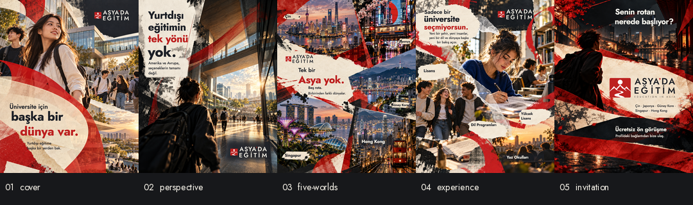
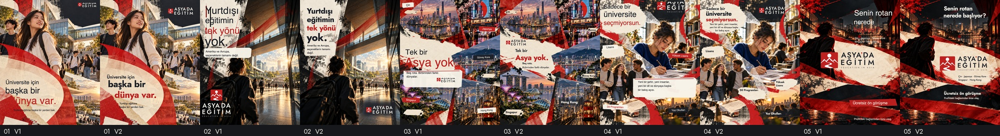

01 / 05
01 / 05Yeni yerleşimler · v2
01 — The Hook
Beş slaytı gez; aynı slaytta eski ve yeni yerleşimler arasında geçiş yap.


01—05
Orijinal kompozisyon → üretim rekonstrüksiyonu
Solda gpt-image-2’nin logosuz, özgün görüntü kompozisyonu; sağda aynı raster kompozisyonun üstüne kurulan son 1080×1350 SVG üretim katmanı. Üretim kaynağında fotoğraf, exact metin, Jost ve canonical SVG ayrı ayrı düzenlenebilir/izlenebilir.
375 px
Mobil ölçekte hızlı kontrol
Önizlemeler 375×469 px; PNG teslimleri 1080×1350 px olarak kalır. 03’teki dar ülke etiketleri ve 05’in ince İngilizce imzası bu ölçekte ikincil okumadır.
FILES
Üretim ve doğrulama
- İçerik + canonical logo manifesti
- Font ve çakışma kontrolleri
- Image-first art direction notları
- Beşli final kontak sayfası
- Original → final karşılaştırma şeridi
- Kritik görsel değerlendirme
- Tekrarlanabilir build source
- Güncel PNG + kaynak ZIP


Her final PNG’de manifestte belirtilen tam, kanonik SVG lockup bulunur. SVG üretim kaynakları source/ içinde; kullanılan original kompozisyonlar originals/ içinde; kilitli logo SVG’leri ve Jost fontu assets/ içinde.